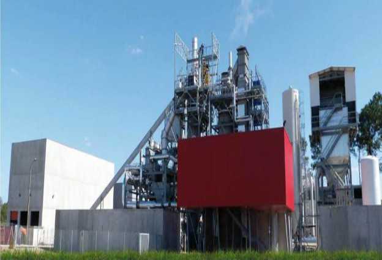
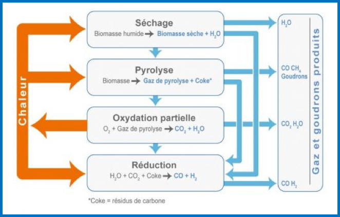

La technologie plasma...
une solution pour produire de l’énergie via nos déchets ?
Qu'est ce que le plasma ?
Le plasma, ou 4ème état de la matière comme on a tendance à l’appeler, est un état tout comme l’état gazeux, solide ou liquide, mais qui se différencie légèrement d’eux car il n’y a pas de transition brusque de ces états qui mène au plasma.
Le plasma est constitué d’un mélange dans lequel « baignent » des électrons négatifs, des ions positifs et des noyaux d’atomes. Ce mélange possède une température extrêmement élevée, et sa charge électrique est neutre. C’est de la matière partiellement, voire totalement, ionisée, ce qui explique d’ailleurs la densité d’énergie très élevée présente dans cet état. Les flammes à très haute température ou la foudre sont par exemple des plasmas naturels, ou encore le soleil, qui est une boule de plasma.
Le fonctionnement de la torche à plasma
La torche à plasma est un outil qui permet de produire des températures extrêmement élevées (se rapprochant de celles du soleil) et ainsi porter des matières en fusion. Elle est d’ailleurs le centre du procédé de vitrification. Son utilisation consiste à générer un flux thermique sans flamme sous forme de plasma, en insufflant de l’air atmosphérique sur un arc électrique, maintenu le plus souvent entre deux électrodes (cas des torches à arc soufflées) ou, parfois, avec une seule électrode (cas des torches à arc transférées) : il en ressort alors ce plasma. Dans les fours à plasma, les électrodes sont placées à l’intérieur de ceux-ci.
Comment produire de l’énergie grâce à cet outil ?
Afin de produire de l’énergie électrique via cet outil, une série d’opérations est nécessaire. Elles se décomposent en 3 grandes phases.
La première phase correspond à la préparation du combustible : les déchets sont broyés puis triés, avec les métaux qui sont récupérés afin d’en faire de nouveaux lingots de métal recyclables, et les inertes qui sont écartés, puis le plus souvent vitrifiés. Tout le reste des déchets est alors utilisé comme combustible homogène, appelé CSR (Combustible Solide de Récupération), et est stocké afin d’être utilisé plus tard.
La deuxième phase consiste à transformer le combustible en gaz. Tout d’abord, il faut appliquer le procédé de gazéification. Le procédé de gazéification est un procédé permettant de transformer, par la chaleur et en le décomposant, un combustible solide en gaz. Celui-ci est alors appelé « syngas » (ou gaz de synthèse), et est un mélange de deux gaz combustibles : le monoxyde de carbone (CO) et l’hydrogène (H2). Pour obtenir ce syngas, plusieurs étapes sont nécessaires :
Les sources
Pour obtenir ce syngas, plusieurs étapes sont nécessaires :
• Le séchage : cette étape permet d’éliminer l’humidité présente dans le combustible en la faisant s’évaporer. C’est pour cela qu’elle s’effectue à une température comprise entre 100°C et 160°C.
• La pyrolyse : la pyrolyse consiste à chauffer le combustible à une température comprise entre 120°C et 600°C dans un milieu sans oxygène. Le manque d’oxygène va provoquer la décomposition de ce combustible, et les atomes de carbones vont s’associer entre eux. Vont se former alors différents gaz : un mélange de gaz oxydants non condensables appelés « gaz de pyrolyse » et composés majoritairement d’oxyde de carbone (CO) et d’hydrocarbures (CH4) ; des goudrons et matières volatiles condensables. Le résidu organique de cette opération appelé « coke » est du carbone contenant des matières minérales.
• L’oxydation : cette étape permet de produire la chaleur nécessaire aux étapes précédentes et à l’étape suivante de la gazéification. Elle se déroule à des températures situées entre 1200°C et 1500°C, et nécessite un fort apport en un agent oxydant, le plus utilisé étant l’oxygène. Une combustion commence lorsque les matières volatiles s’oxydent, ce qui génère assez de chaleur pour les autres phases du procédé. Du dioxyde de carbone et de la vapeur d’eau résultent également de cette phase, ils seront nécessaires pour la suite.
• La réduction : en absence d’oxygène, le coke réagit avec le dioxyde de carbone et la vapeur d’eau produits précédemment, formant ainsi de l’oxyde de carbone et de l’hydrogène, qui se mélangent afin de former du syngas.
